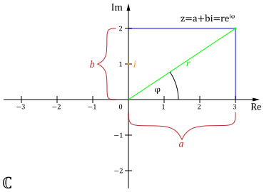

Ziel dieses Abschnittes ist das Lösen algebraischer
Gleichungen (z.B. x^2+1=0) in denen Wurzeln
negativer Zahlen vorkommen. Dieses wird häufig benötigt um
Nullstellen reeller Polynome \sum_{k=0}^{n}a_k x^k,
a_k\text{, } x\in\mathbb{R},
k\in\mathbb{N} zu finden.
z^*=p-i\,q ist die konjugiert komplexe
Zahl zur Zahl z=p+i\,q
Gaußsche Zahlenebene:
Die Gaußsche Zahlenebene dient der Veranschaulichung
von komplexen Zahlen und komplexen Abbildungen. Wie
in Abbildung 1 zu sehen, kann eine komplexe Zahl
z = p+i\,q mit z \in \mathbb{C},
p,q \in \mathbb{R} durch zwei Abbildungen
in einem zweidimensionalen Koordinatensystem
dargestellt werden.
\begin{eqnarray*}
\Phi\;:\;\mathbb{C}&\rightarrow&\mathbb{R}^2\\
z&\mapsto& (p,q) \mbox{ mit } z=p+i\,q\\ \\
\Psi\;:\;\mathbb{C}&\rightarrow&\mathbb{R}^2\\
z&\mapsto& (r,\phi) \mbox{ mit }
z=r\, \left(
\cos\phi+i\,\sin\phi
\right)
\end{eqnarray*}

Abbildung 1: Die Gaußsche Zahlenebene ist ein
kartesisches Koordinatensystem, in dem der Realteil
\Re(z) = a \in \mathbb{R} einer komplexen
Zahl z \in \mathbb{C} auf der x-
Achse und der Imaginärteil \Im(z) = b \in
\mathbb{R} auf der y-Achse aufgetragen
wird.
In Abbildung 1 wird eine andere Abbildungsvorschrift für
\Psi als in unserer Definitionsliste verwendet.
Dies ist kein Fehler es gild nämlich
r\, \left( \cos\phi + i\,\sin\phi \right)
=
r\,e^{i\,\phi}
Um diese sogenannte Euler-Formel zu
verstehen müssen wir die komplexe e-
Funktion verstehen. Gelegenheiten hierfür wird im Laufe des
Kurses noch geben. Für den Moment muss die Euler-Formel so
akzeptiert werden (alle, die nicht warten können verweisen
wir auf den
Wikipedia-Artikel zur Exponentialfunktion).
Beispiele
Ein Polynom mit reellen und komplexen Nullstellen ist zum
Beispiel p(x)=x^3+x. Wir können es umschreiben zu
p(x)=x^3+x=x(x^2+1) und erkennen, dass nur eine
reelle Nullstelle existiert und zwar bei x_1=0.
Im Komplexen hingegen besitzt dieses Polynom drei
Nullstellen und zwar x_1=0,\,x_2=i,\,x_3=-i.